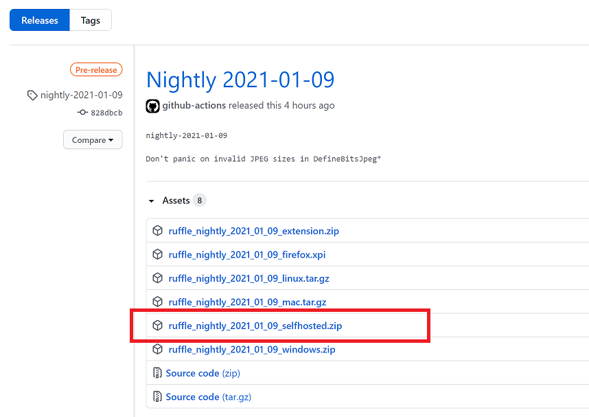
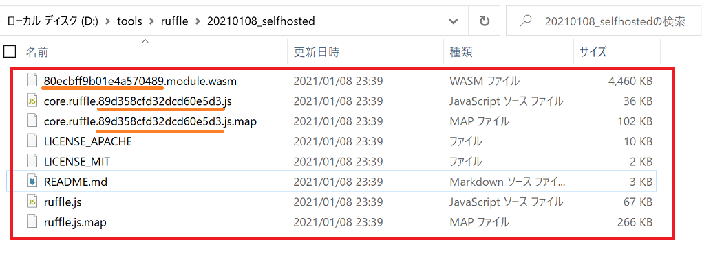

Ruffleの利用方法
- Flash Playerのエミュレーター、Ruffleの利用方法をまとめます。
(最新の使い方はUsing Ruffleも参考にしてください)
- サーバー側で準備する方法の場合、定期的に更新が必要ですがファイルの置き換えで対処可能です。
- 現状開発版(Nightly)なので、不具合がある場合があります。実施する場合はご注意ください。
利用側(ローカル版)で対応する場合
Windows
- Ruffle (Releases)ページより、
ruffle_nightly_YYYY_MM_DD_windows.zip をダウンロードします。
(Assetsをクリックするとダウンロードの一覧が展開されます)
https://github.com/ruffle-rs/ruffle/releases/
- フォルダを解凍して、任意の場所に置きます。
- 実行したいswfファイルを、
ruffle.exeにドラッグ＆ドロップすると再生されます。
MacOS, Linux
利用側(ブラウザ拡張)で対応する場合
サーバー側(作品公開元)で準備する場合 (Self-Hosted)
- RuffleではWebAssemblyを利用しているため、.wasm のファイルを利用できるようにする設定が必要です。
- .htaccess が触れるレンタルサーバの場合は、.htaccessに以下を追加すれば可能です。
AddType application/wasm .wasm
-
Ruffle (Releases)ページより、ruffle_nightly_YYYY_MM_DD_selfhosted.zip をダウンロードします。

-
ファイルを解凍して「ruffle」フォルダを作成し、フォルダ内のファイル（赤枠）をコピーしておきます。
（英数字の羅列：オレンジ下線の部分は、nightlyのバージョンにより異なります）

-
「ruffle」フォルダをサーバーへアップロードします。場所はどこでも構いません。
-
Flash作品のHTMLファイルのヘッダーに、以下の記述を追加します。
（ダンおに作品は文字コードをShift-JISにしていることが多いので、charsetも念のため指定しておきます）
<head>
// 省略
<script src="(アップロードしたフォルダの)ルートパス)/ruffle/ruffle.js" charset="UTF-8"></script>
</head>
- HTMLファイルをサーバーにアップロードして、Ruffleが優先されるか確認します。
動作サンプル：サンプルページ